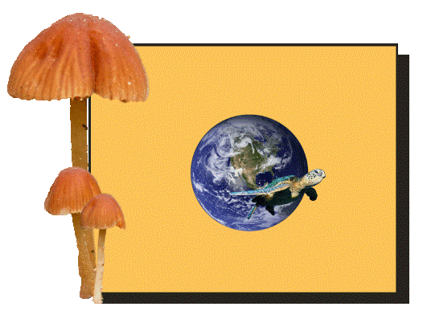
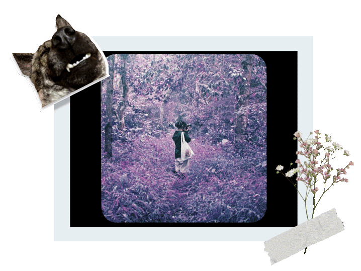

Hi there! So you want to know more about me? Let’s get to know about each other then!
I’m Hanh
Linh, but you can call me Grace. I am very queer in my own way. I am a 21
year old human being that was born and raised in Viet Nam. My pronouns are they/them.
In 2021, I by chance participated in a small online
course in UXD and I felt so interested in it.
In 2022, I decided to start my proper UXD bachelor
degree in The Hague, Netherlands.
In 2023, I took a minor programme in Interaction Technology with
the aim of exploring more the technical aspects of the Human-Computer Interaction field.
Businesses that I would like to work with in the future:
- Non-governmental organizations
- Ethical companies
- LGBTQ+ allied companies
- Organizations in the field of environmental and animal conservation
I would love to work with businesses that commit to make positive impacts on society.

Things I want to achieve in the future:
- Further develop on my personal project against wildlife trafficking crimes
- Explore more in the world of Human Computer Interaction specialising in AI/ML
- Learn new languages (Dutch, Chinese and Japanese)
Things that would keep me happy:
- Read and write poems
- Make collage art
- Spend time with nature and animals
- Play games (Stardew Valley)
- Think of my dog at home
- Small and constantly changing hobbies
- Learning, learning, and learning
